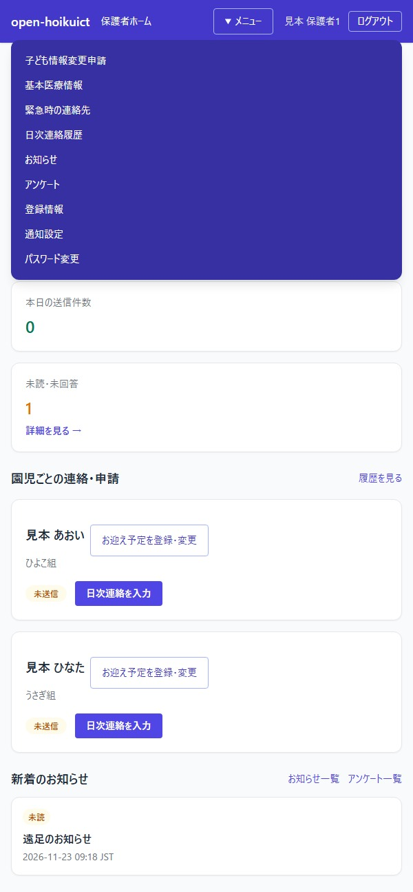
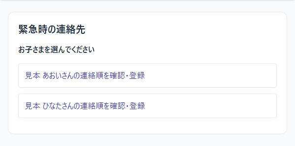
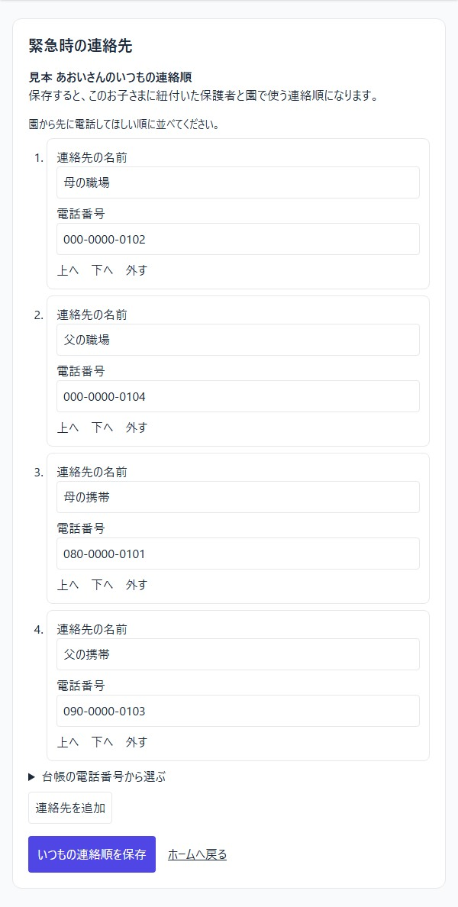
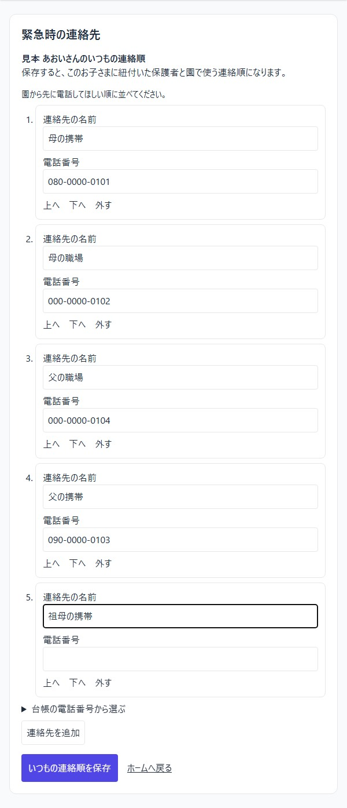
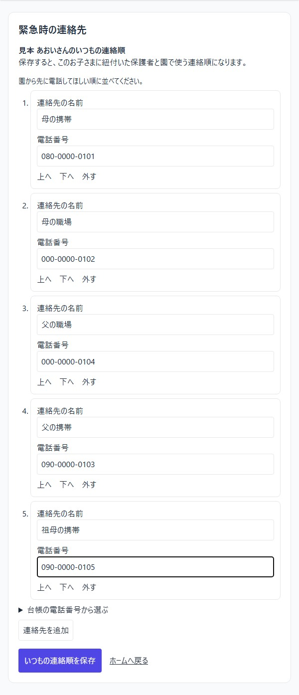
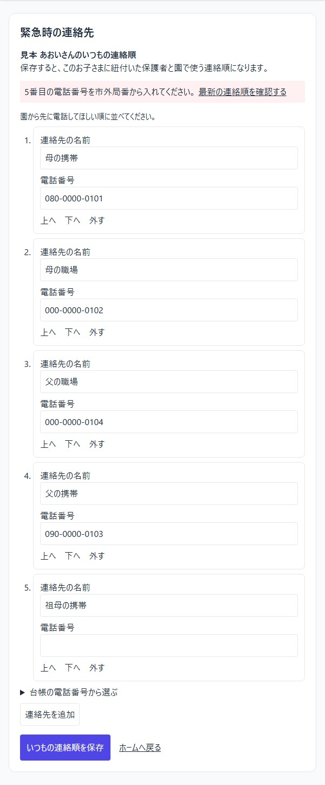
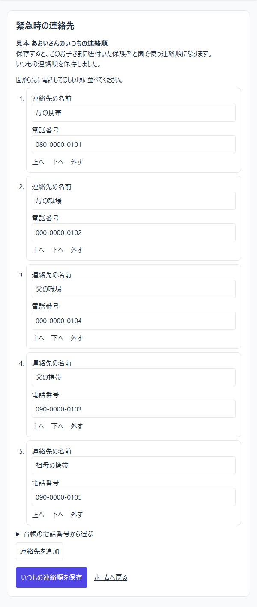
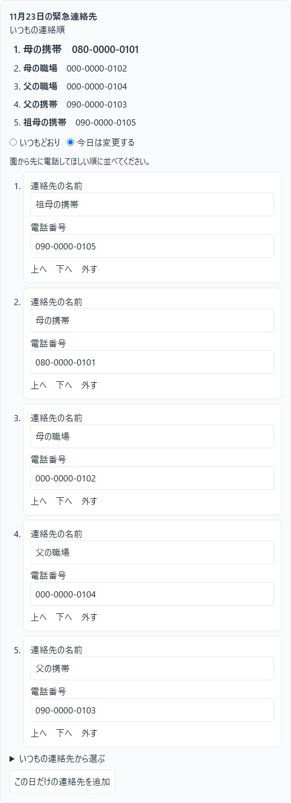
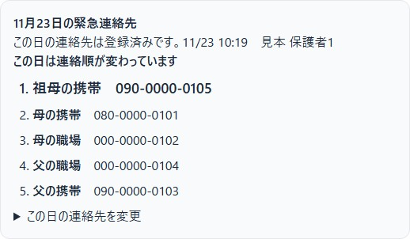
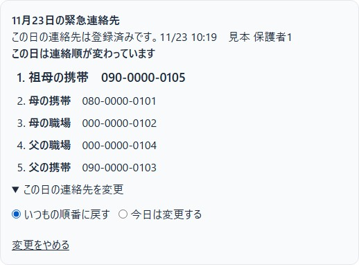

保護者向け
いつもの緊急連絡順を登録する・その日だけ変える
園から先に電話してほしい順番を、お子さまごとに登録します。いつもの順番と、その日だけの変更を使い分けます。
開く順番
保護者ホーム → メニュー → 緊急時の連絡先
1メニューからお子さまを選ぶ
保護者ホームで「メニュー」→「緊急時の連絡先」を開きます。お子さまが複数いる場合は、登録するお子さまを選びます。一人の場合は直接入力画面が開きます。


2連絡先と、電話してほしい順番を確認する
見出しのお子さまの名前を確認します。「連絡先の名前」と「電話番号」を確かめ、「上へ」「下へ」で順番を変えます。
初めて開いたときは、台帳の電話番号が候補として入る場合があります。そのまま確定せず、ご家庭で使う番号と順番を確認してください。

3必要な連絡先を追加し、保存する
「連絡先を追加」で行を増やし、名前と電話番号を両方入れます。不要な行は「外す」で除きます。「台帳の電話番号から選ぶ」も利用できます。
名前・番号・順番を見直して「いつもの連絡順を保存」を押します。並べ替えや行の追加だけでは保存されません。入力エラーが出たときは該当の行を直して、もう一度保存します。






4保存完了と、お子さまごとの順番を確かめる
「いつもの連絡順を保存しました。」と表示されたことを確認します。開き直しても番号と順番が残ります。
兄弟姉妹へ自動的に同じ順番は入りません。別のお子さまも必要に応じて登録します。保存した順番は、そのお子さまに紐付く保護者と園で確認できます。

5その日だけ変えるときは日次連絡で入力する
ホームで対象の日付を選び、お子さまの「日次連絡を入力」または「日次連絡を編集」を開きます。緊急連絡先の「今日は変更する」を選び、その日の順番に並べます。
見本は、その日だけ祖母の携帯を先頭にした例です。日次連絡のほかの項目も確認し、画面下の「保存する」で保存します。通常の順番、ほかの日、兄弟姉妹の順番は変わりません。




6その日の変更を元に戻す
日次連絡を開き直し、「この日の連絡先を変更」→「いつもの順番に戻す」を選び、画面下の「保存する」を押します。選んだだけでは保存されません。
「変更をやめる」は、入力中の変更をやめるためのボタンです。すでに保存済みの回答を取り消す操作ではありません。
いつもの順番を後から変更しても、すでに登録したその日の回答は自動で変わりません。当日も変える場合は、その日の日次連絡を確認します。

読み終えたら確認すること
このチェックは読み進めるための目印です。業務記録や公開承認は送信されません。